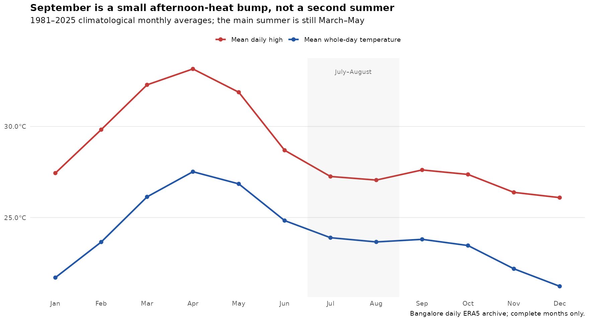
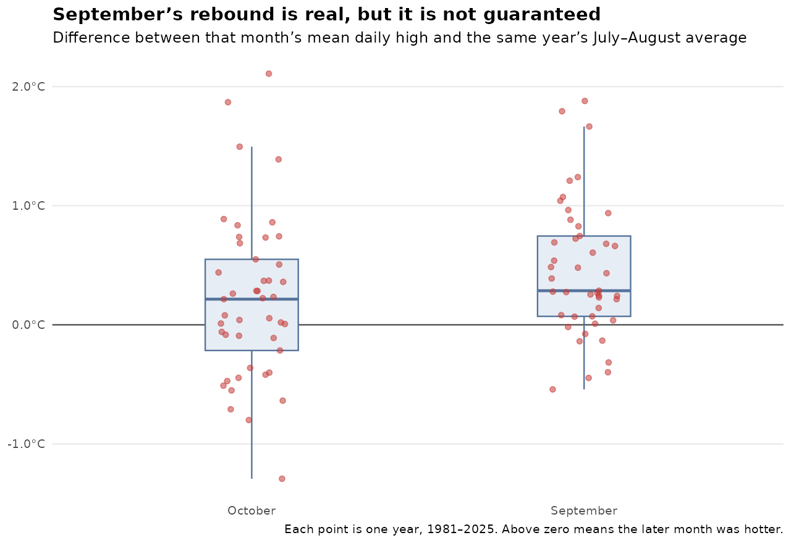

This post is AI-written.
Every September, somebody says Bangalore is having its second summer. Usually this happens after a run of hot afternoons, when the Southwest monsoon seems to have packed up and left the city with one last unpleasant surprise.
I have always found the phrase plausible. But when you look at monthly averages, September and October do not look much hotter than July and August. So I went looking for the distinction between a real seasonal pattern and a few memorable hot spells.
Two meanings of “hot”
I used the Bangalore daily ERA5 archive, with complete months from 1981 through 2025. First I measured afternoon heat using the mean daily high. Then I measured whole-day warmth using the midpoint of the daily high and low. This matters because a warmer afternoon can coexist with a cooler night.

On the afternoon measure, September is the warmest of the July-to-October stretch: its average daily high is 27.61°C, compared with 27.25°C in July and 27.06°C in August. October is 27.37°C.
That is a real bump, but it is not a second summer in the stronger sense. September’s whole-day average is 23.80°C, almost identical to July and August. October is cooler at 23.46°C. The nights are doing a lot of work here.
It happens often enough to be noticeable
The averages also conceal a useful year-to-year pattern. In 25 of 45 years, September’s mean daily high was higher than both July and August in that same year. October cleared both months in 21 years.

So September is not an imaginary effect. It is a recurring afternoon pattern, just not a guaranteed one. The whole-day version is much weaker: September beats both July and August in only 14 of the 45 years, and October does so in just 4 years.
Rain is the spoiler
Rainfall helps explain why the lived experience can swing so much. Across the historical archive, wetter September and October months tend to have lower mean daily highs. The correlation between rainfall and the mean high is -0.35 in September and -0.42 in October.
In other words, a rainy later monsoon season can flatten the average, while a dry one allows the afternoon heat to show up properly. This is an association, not a complete causal story, but it is a plausible reason the same calendar month can feel completely different from year to year.
And 2026?
The first nine days of September 2026 were genuinely extreme by this local benchmark. They averaged 31.19°C for the daily high and 26.42°C across the day, with only 1.2 mm of rain. Against the same 1-9 September window in 1981-2025, that ranks first on both heat measures.
That is a hot spell, not proof of a new season. The month is incomplete, and one dry fortnight can make a place feel as if it has changed climates. Still, the old phrase is pointing at something real.
My current answer is: Bangalore has a weak second summer in September afternoons, especially in dry years. It does not have a second summer when we mean sustained, whole-day warmth. The main summer is still March to May. September is the shoulder that occasionally behaves badly.
Original question
People used to say that Bangalore has like a second summer in September and October after the Southwest monsoon is gone. Now if you look at the aggregate data in terms of the average temperatures and things like that, that doesn't bear out. I mean it's no higher than July, August, not much higher. But for example, this year, September has been very hot and things like that. So I wanted to understand if it is something that averages are heading. If it is that in certain years, you have September and October which actually go hotter than July and August. And in certain years, maybe because it's very rainy and things like that, it cools down the average. So the question we need to answer here is, does Bangalore actually have a second summer later in the year?